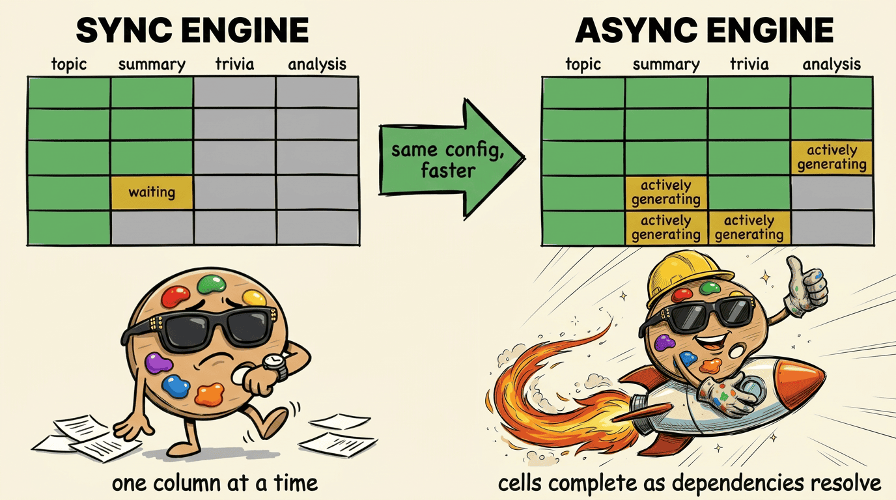
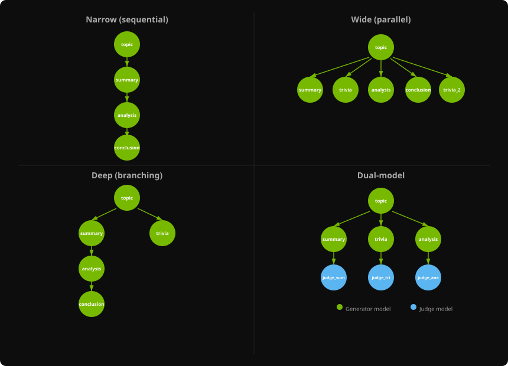
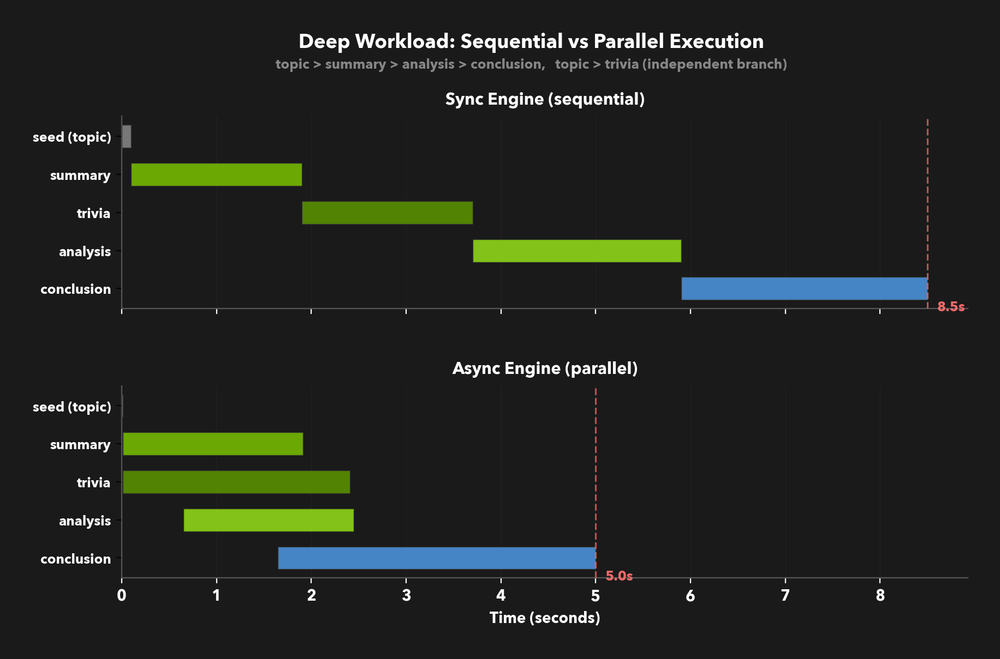
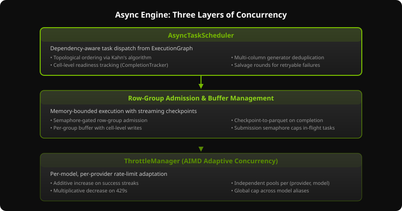
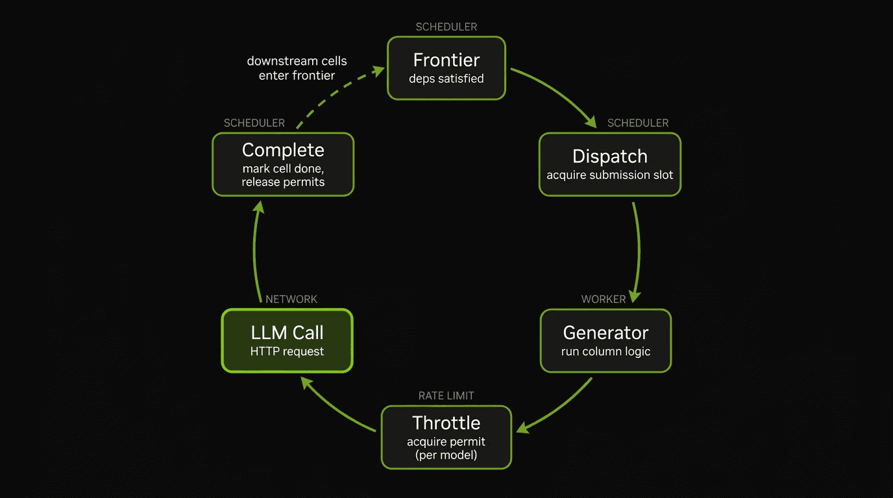
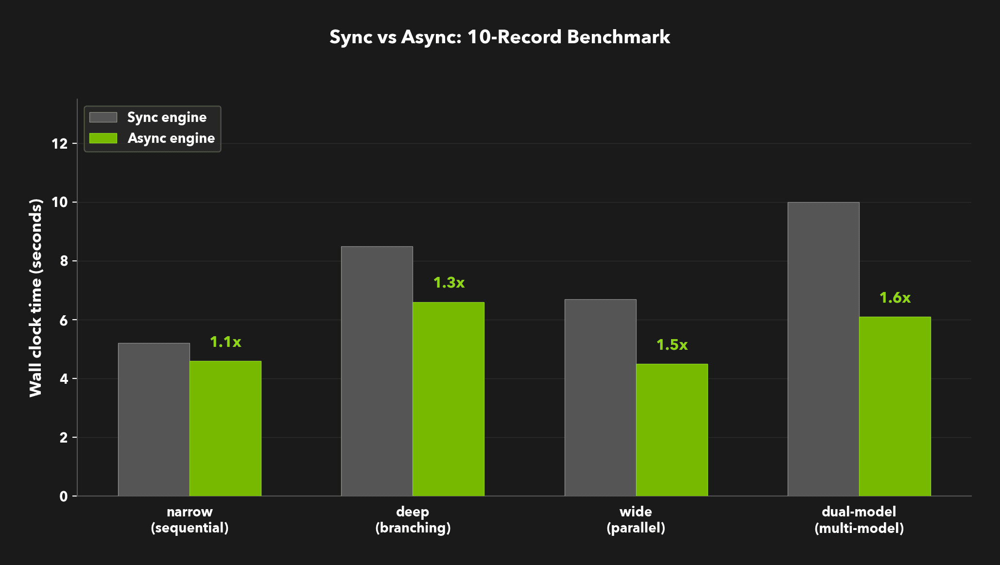
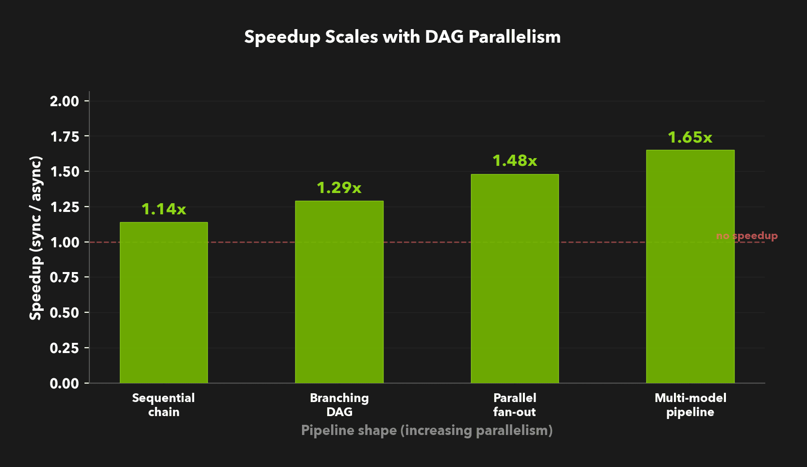
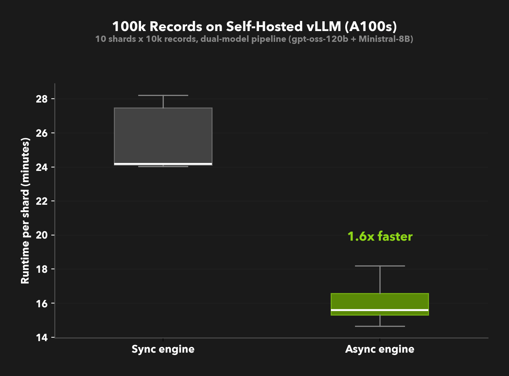
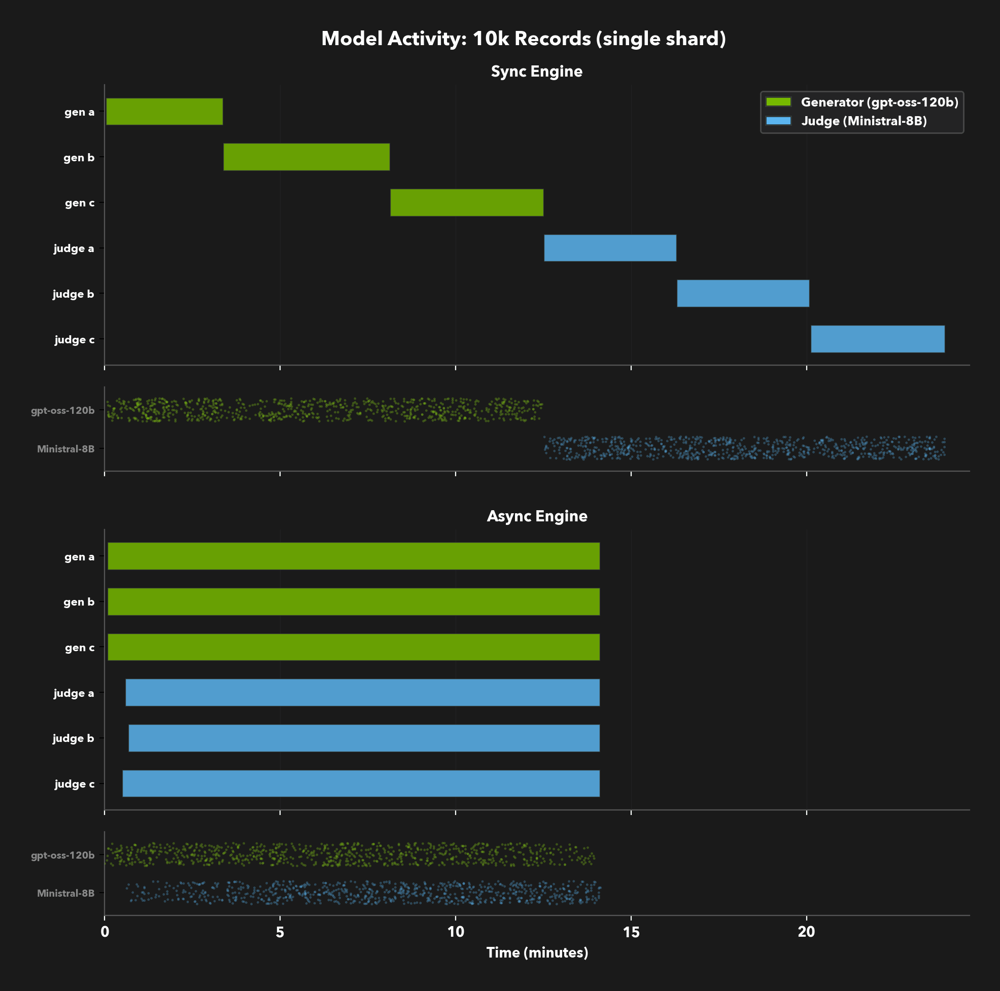

Async All the Way Down
Data Designer's execution engine now schedules work at the cell level rather than the column level. Instead of running each column to completion before starting the next, the async engine dispatches a cell as soon as its specific upstream dependencies complete. Multi-model pipelines keep every endpoint saturated, and single-model pipelines benefit from AIMD-based adaptive concurrency. The result is faster pipelines with no changes to your config.

This post walks through how we built the new execution layer, what it does differently, and what it means for pipelines at scale.
The Bottleneck Was Structural
Every Data Designer pipeline carries a map of what can run in parallel. Consider a pipeline that generates a topic, writes a summary and a trivia fact from that topic, then produces an analysis of the summary. summary and trivia both depend on topic, so they could run alongside each other. analysis depends on summary, so it has to wait - but only on the same row's summary, not the entire column. These references form a per-cell dependency graph. The previous engine used that graph to order columns, but within each batch it ran each column to completion before starting the next. A row's analysis couldn't start until every row of summary in that batch had finished, even though it only needed its own.
Now add one more column: conclusion depends on analysis. The dependency graph now has a branch (trivia runs independently) and a chain (summary → analysis → conclusion). That's the "Deep" shape below:

In the sync engine, this pipeline takes about 8.5 seconds for 10 records with max_parallel_requests=16. Columns run sequentially even when they're independent — trivia waits for summary to complete despite not needing its output. Most of the wall-clock time is spent waiting on LLM responses that could have been in flight simultaneously.
The fix isn't "make the LLM faster." It's "stop waiting when you don't have to." The figure below shows the same deep pipeline under both engines, with each bar representing the time span a column is actively generating:

In the sync timeline (top), columns run one after another — all rows of summary finish before trivia begins. In the async timeline (bottom), the picture is fundamentally different. summary and trivia start at the same time since they share the same dependency. But the real gain is what happens next: each row's analysis kicks off the moment that row's summary completes, even while other rows of summary and trivia are still generating independently. conclusion fires per-row as each analysis result lands. Same pipeline, same config — across our benchmark trials, this shape averaged 1.3x faster. No wasted cycles, no idle slots — just the dependency graph doing exactly what it was always meant to do.
Another way to see it: look at the dataset as a grid where each cell is one (row, column) task. The animation below shows four columns of the deep pipeline (topic, summary, trivia, analysis) across 8 rows. In the sync engine, cells fill column by column — every row of summary must finish before any row of trivia starts. In the async engine, each cell dispatches the moment its own upstream cell completes. A row's analysis starts as soon as that row's summary is done, while other rows of summary and trivia are still generating in parallel.
Three Layers of Concurrency
Getting this right required solving three problems at different levels of the stack. We built a layered system where each layer manages one concern.

Layer 1: Dependency-aware dispatch
At the top sits the AsyncTaskScheduler. It builds an ExecutionGraph from your column configs using Kahn's algorithm for topological ordering, then tracks per-cell completion via a CompletionTracker. When a cell completes, the tracker determines which downstream cells are now ready and pushes them onto the dispatch queue.
The scheduler maintains a frontier — the set of tasks whose inputs are all satisfied. Dispatch is a loop: pull ready tasks from the frontier, acquire a semaphore slot, spawn a worker. When the worker completes, mark the cell done, which may add new tasks to the frontier. The loop runs until every cell in every row group has completed or been dropped.
There's a subtlety in how the scheduler manages its task slots, and getting it right required a delicate dance between two semaphores. A naïve approach would hold a submission slot for the entire lifetime of a task. That's fine for the outbound HTTP call — the slot is released before the request goes out. But the ThrottleManager can impose an internal timeout while waiting for a permit during AIMD cooldown, and that wait would hold the submission slot hostage. If enough tasks are blocked waiting for throttle permits, the scheduler can't dispatch new work even when the frontier has ready tasks.
The fix is a one-way semaphore handoff. The scheduler maintains two pools: a submission semaphore that caps how many tasks can be dispatched, and an LLM-wait semaphore (sized larger) for tasks that are blocked on a model call. When a task is about to call the model, it acquires an LLM-wait slot and releases its submission slot in the same atomic operation — stepping from one pool to the other mid-flight. The dispatch loop immediately sees a free submission slot and can send another task. When the LLM responds, the LLM-wait slot is released. Non-LLM generators (samplers, Jinja expressions) skip the handoff and hold their submission slot for the full duration, which is fine because they complete quickly.
if is_llm_bound:
await self._llm_wait_semaphore.acquire()
holds_llm_wait = True
self._submission_semaphore.release()
holds_submission = False
This keeps the dispatch loop saturated without unbounded coroutine growth — the submission semaphore controls how fast tasks enter, and the LLM-wait semaphore controls how many are waiting on the network.
Layer 2: Row-group admission
Below the scheduler, the 10,000 rows you requested aren't all in memory at once. They're partitioned into row groups that checkpoint to parquet independently. A semaphore limits how many row groups are in flight simultaneously, preventing memory from growing unboundedly on large runs.
When a row group completes — all columns generated for all its rows — the buffer manager flushes it to disk and releases the memory. Partial results appear on disk during generation. If something fails, you keep everything that already checkpointed. This is also the basis for fault tolerance, discussed later — the unit of loss is a row group, not the entire run.
Layer 3: Adaptive rate limiting
At the bottom, each (provider, model) pair gets an independent concurrency pool with additive-increase, multiplicative-decrease (AIMD) rate adaptation. When the provider returns a 429, the pool cuts its concurrency. On streaks of successful requests, it gradually increases. Because this happens per-model, a judge model running on one provider can saturate its endpoint while a generator on another provider is backing off. The Owning the Model Stack dev note covers this layer in depth.
How they compose
The layers are independent. The scheduler decides what to run next. The row-group layer decides how much to keep in memory at once. The throttle layer discovers how fast each provider will accept requests. No layer needs to know about the others.
A single task's lifecycle makes the composition concrete:

A cell enters the frontier when its upstream dependencies are satisfied. The dispatch loop acquires a submission slot and hands it to a worker. The worker runs the generator, which acquires a throttle permit before making the LLM call. On completion, permits are released, the cell is marked done in the CompletionTracker, and any downstream cells whose dependencies are now satisfied enter the frontier. The cycle continues until every cell has completed or been dropped.
Benchmark Results
We tested four DAG shapes that represent common pipeline patterns. All benchmarks used 10 records with max_parallel_requests=16, running 4 measured trials (interleaved sync/async to reduce temporal bias) after a warmup.

The pattern is clear: speedup scales with the amount of parallelism available in the DAG.
| Workload | DAG shape | Sync | Async | Speedup |
|---|---|---|---|---|
| Narrow | 4-column sequential chain | 5.2s | 4.6s | 1.1x |
| Deep | Chain + independent branch | 8.5s | 6.6s | 1.3x |
| Wide | 5 independent columns | 6.7s | 4.5s | 1.5x |
| Dual-model | 3 generators + 3 judges | 10.0s | 6.1s | 1.6x |

The narrow workload is a sequential chain with no cross-column parallelism. The async engine still ekes out a small gain from overlapping row-level dispatch, but there's no structural parallelism to exploit. This is expected: async can't speed up a fundamentally serial pipeline.
The dual-model workload is the most interesting case. Three generation columns use one model, and three judge columns use another. Each model gets its own ThrottleManager pool. The judge model starts processing rows as soon as the first generator finishes, running at full concurrency while the generator is still producing. In the sync engine, all generation has to finish before any judging starts.
At higher record counts
The benchmarks above use 10 records deliberately — small batches isolate the scheduling benefit from rate-limit effects. At higher record counts, the bottleneck shifts. The async engine dispatches requests more aggressively, which means it discovers the provider's rate limits sooner. When a 429 hits, the AIMD controller backs off, and the backoff can cascade through downstream columns that were waiting on the throttled model's output.
This is where the per-model throttle pools become important. Single-model pipelines are most susceptible to cascading backoff because all columns compete for the same pool. Multi-model pipelines hold up well because each model adapts independently — a 429 on the generator model doesn't slow down the judge. In our larger runs, dual-model and multi-provider workloads consistently showed the largest async gains.
The primary tuning lever is max_parallel_requests per model. Set it to a generous upper bound and let AIMD find the real ceiling. See the Owning the Model Stack dev note for the full story on adaptive concurrency.
At scale with self-hosted inference
Rate limits are a property of hosted API providers. With self-hosted vLLM on your own GPUs, the bottleneck shifts from API quotas to GPU throughput, and the async engine's aggressive dispatch becomes an advantage rather than a risk.
We ran the dual-model pipeline at 100k records on a Slurm cluster with NVIDIA A100-80GB GPUs: one node running a 120B generator model (TP=4, DP=2) and a second node running an 8B judge model (TP=1, DP=8). Each job processed a 10k-record shard, with 10 shards running in parallel. This is a two-node setup, but the same approach extends to as many nodes and models as your pipeline needs.

Across 10 shards, the async engine averaged 16 minutes per shard versus 25 minutes for sync, a consistent 1.6x speedup with low variance. No rate limits, no AIMD backoff, just the scheduling difference.
The model activity timeline shows why. In sync mode, DD processes each column to completion before starting the next, so the generator and judge models take turns. In async mode, the judge starts processing rows as soon as the first generator results land, keeping both models busy simultaneously.

Look at the dot strips beneath each Gantt chart. In sync mode, each model endpoint is at full capacity while it's active - but only one is active at a time. The generator GPUs sit idle while the judge runs, and vice versa. When a single self-hosted endpoint is already saturated, async scheduling alone can't push more throughput through it. The speedup here comes from pipelines with multiple endpoints, where async keeps all of them busy simultaneously instead of leaving half your GPUs idle.
Beyond Speed
The performance numbers are satisfying, but raw throughput is only part of the picture. The async engine changes several things about the experience of running large pipelines.
Progress you can see
Because rows complete out of order and row groups checkpoint independently, results start appearing on disk within seconds. The new progress bars — sticky ANSI bars that redraw in-place at the bottom of the terminal — update on every task completion rather than waiting for a full column to finish. Log messages from the scheduler and throttle layer render above the bars, so you see both the high-level progress and the per-event detail. A 10-minute generation run no longer means staring at nothing until the end.
column 'topic' ████████████████████████████████████░░░░ 89% | 890/1000 | 148.3 rec/s | eta 1s | 0 failed
column 'summary' ██████████████████████████░░░░░░░░░░░░░░ 65% | 650/1000 | 108.3 rec/s | eta 3s | 2 failed
column 'trivia' █████████████████████████████░░░░░░░░░░░ 72% | 720/1000 | 120.0 rec/s | eta 2s | 0 failed
column 'analysis' ██████████████░░░░░░░░░░░░░░░░░░░░░░░░░░ 35% | 350/1000 | 87.5 rec/s | eta 7s | 1 failed
When tracing is enabled (DATA_DESIGNER_ASYNC_TRACE=1 or RunConfig(async_trace=True)), the scheduler also records a TaskTrace for every task: when it was dispatched, when it acquired a semaphore slot, when it completed, and its status. These traces are available on the result object after the run, so you can reconstruct the scheduler's timeline and understand where time was spent.
Fault tolerance
Failures in a long-running pipeline are not exceptional — they're expected. Model endpoints return 429s, connections time out, prompts produce unparseable output. The scheduler classifies errors into two buckets.
Retryable errors (rate limits, timeouts, transient server errors) are deferred rather than dropped. The task stays on the frontier so it can be re-attempted. If a row group stalls — all of its pending tasks are deferred and nothing is in flight — the scheduler detects the deadlock and runs salvage rounds: it re-dispatches the deferred tasks inline, up to a configurable maximum number of attempts. Tasks that still fail after salvage are dropped, and the row group is checkpointed with whatever succeeded. This prevents a stalled row group from holding its semaphore slot forever and blocking admission of new row groups.
Non-retryable errors (malformed output, validation failures) drop the row immediately. The CompletionTracker knows which downstream tasks depended on that row and removes them from the frontier, so no work is wasted on a row that's already lost.
In both cases, completed row groups are already on disk. The unit of loss is at most one row group, not the entire run. If the scheduler detects a sustained high error rate, it can shut down early, preserving everything that already checkpointed.
Multi-model concurrency
Multi-model pipelines are where the architecture pays for itself. With independent throttle pools per model, there's no reason not to use the right model for each job: a reasoning model for generation, a smaller model for judging, an embedding model for deduplication, each running at its own optimal concurrency. The previous engine supported multi-model configs, but running them concurrently is what makes them practical at scale.
Adoption
Adoption is opt-in. Set DATA_DESIGNER_ASYNC_ENGINE=1 in your environment. Your existing pipeline definitions, dependency graph, column configs, model aliases all stay the same. We're keeping it behind an environment variable while we harden edge cases, but the goal is to make async the default.
The Build
This was a ground-up rebuild of the execution layer, delivered across six PRs over four weeks.
It started with the data structures: ExecutionGraph, CompletionTracker, and task models (#356). Next came the generator migration (#378), where we added symmetric generate()/agenerate() bridging so every generator works in both modes without rewriting. The core scheduler and buffer manager followed in #404, then integration into DatasetBuilder with callbacks and trace export (#429). The ThrottledModelClient and dual-semaphore scheduler landed in #449, wiring AIMD concurrency control into every outbound model request. A final polish pass (#456) added async preview, unified lifecycle callbacks, and sticky ANSI progress bars.
The symmetric bridging was critical for adoption. Every ColumnGenerator has both a generate() and an agenerate() method. Implement one, and the base class synthesizes the other:
class ColumnGenerator:
def generate(self, data):
# If only agenerate() is overridden, bridge to it synchronously
if not self._is_overridden("agenerate"):
raise NotImplementedError
return _run_coroutine_sync(self.agenerate(data))
async def agenerate(self, data):
# If only generate() is overridden, run it in a thread pool
if not self._is_overridden("generate"):
raise NotImplementedError
return await asyncio.to_thread(self.generate, data.copy())
Generator authors implement whichever method is natural — sync for CPU-bound work, async for generators that make their own network calls — and the base class handles bridging. No existing generator needed to be rewritten. Plugin authors get async support for free.
Try It
Enable the async engine on any existing pipeline by setting an environment variable:
DATA_DESIGNER_ASYNC_ENGINE=1 python my_pipeline.py
Pair it with the new progress bars for real-time feedback:
from data_designer.config.run_config import RunConfig
from data_designer.interface import DataDesigner
dd = DataDesigner()
dd.set_run_config(RunConfig(
progress_bar=True,
))
result = dd.create(
config_builder=config,
num_records=1000,
)
Pipelines with independent columns or multi-model setups will see the largest gains. Sequential chains will run at roughly the same speed. No config changes required.
The dependencies were always per-cell. Now the engine schedules them that way.
Key Resources:
- NeMo Data Designer on GitHub
- Data Designer Documentation
- Owning the Model Stack: Adaptive Concurrency — companion dev note on the native client layer and AIMD throttling
- Async Engine Plan (#346) — original issue and architecture plan
Want to learn more about NeMo Data Designer? Check out our documentation and start building your own synthetic data pipelines today.